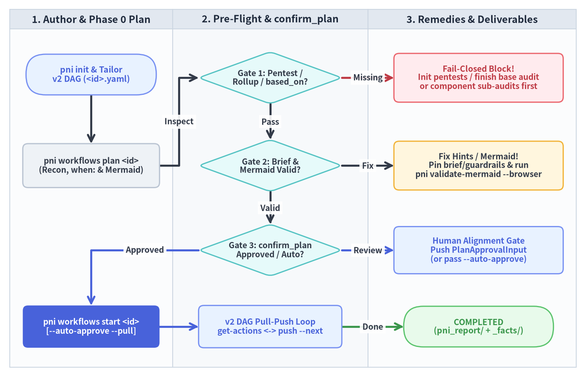

Workflow v2 条件付き DAG と Pre-Flight ゲート
信頼性の高いソフトウェア健全性監査、モノレポのマルチコンポーネントロールアップ、ライブペネトレーションテスト、および段階的モダナイゼーション計画を実行するには、実行状態を SQLite に固定する前の決定論的な計画立案と事前検証が不可欠です。pni501 (v0.2.0) はこのライフサイクルを pni workflows に統合し、Workflow v2 条件付き DAG エンジン（needs: 依存関係、when: 条件ガード、Phase 0 軽量偵察と検証済み Mermaid DAG、confirm_plan 承認ゲート、並列フロンティア実行）、4 つのワークフローカテゴリ（audit, rollup, migration, progress）、3 つの動作モード、および 55 対応言語 + generic にわたる 112 個の組み込みワークフローテンプレートを提供します。

Source Code
from drawlib.canvas import save, setup
from drawlib.icons import phosphor
from drawlib.smartarts import CardList, Panel
from drawlib.styles import Styles
setup(width=182, height=84, dpi=150)
p1 = Panel(
"Mode 1: Workflow v2 DAG",
header_variant="filled",
header_height=10.5,
style=Styles.Neutral.patch(shape_r=2.0),
header_style=Styles.PrimaryFlat,
text_style=Styles.WhiteBold.patch(text_size=11.2),
icon=phosphor.database,
icon_style=Styles.WhiteBold,
)
p1.draw(xy=(3.0, 3.0), width=56.5, height=78.0)
ix1, iw1, ih1 = p1.get_content_box(xy=(3.0, 3.0), width=56.5, height=78.0, padding=(2.5, 2.5))
c1 = CardList(
style=Styles.WhiteBordered.patch(shape_r=1.5),
text_style=Styles.DarkBold.patch(text_size=10.5),
description_style=Styles.Dark.patch(text_size=10.0),
badge_shape="rounded_rect",
badge_style=Styles.PrimaryNeutral,
badge_text_style=Styles.PrimaryBold.patch(text_size=10.0),
icon_style=Styles.PrimaryBold,
direction="vertical",
spacing=2.4,
)
c1.add("plan / start --auto-approve", "Phase 0 Mermaid + confirm_plan\n& wf-<8hex> in state SQLite", icon=phosphor.hard_drives)
c1.add("get-actions & push --next", "Parallel det waves (0 ACK),\nfact_views & triage grounding", icon=phosphor.shield_check)
c1.add("Flat pni_report/ & SARIF", "Syncs pni_report_src/_facts/,\nemits score, SARIF & A4 PDF", icon=phosphor.file_pdf)
c1.draw(xy=ix1, width=iw1, height=ih1)
p2 = Panel(
"Mode 2: Ad-Hoc Runner",
header_variant="filled",
header_height=10.5,
style=Styles.Neutral.patch(shape_r=2.0),
header_style=Styles.SecondaryNeutral,
text_style=Styles.DarkBold.patch(text_size=11.2),
icon=phosphor.lightning,
icon_style=Styles.SecondaryBold,
)
p2.draw(xy=(62.5, 3.0), width=56.5, height=78.0)
ix2, iw2, ih2 = p2.get_content_box(xy=(62.5, 3.0), width=56.5, height=78.0, padding=(2.5, 2.5))
c2 = CardList(
style=Styles.WhiteBordered.patch(shape_r=1.5),
text_style=Styles.DarkBold.patch(text_size=10.5),
description_style=Styles.Dark.patch(text_size=10.0),
badge_shape="rounded_rect",
badge_style=Styles.SecondaryNeutral,
badge_text_style=Styles.DarkBold.patch(text_size=10.0),
icon_style=Styles.SecondaryBold,
direction="vertical",
spacing=2.4,
)
c2.add("run-action / run-step", "Stateless adhoc.py runner; zero\nSQLite reads, writes, or locks", icon=phosphor.prohibit)
c2.add("Lazy In-Memory Facts", "Computes Project & 55-Lang AST\non demand for target selector", icon=phosphor.cpu)
c2.add("Fast Iteration Flags", "--base-url, --force-pentests &\n--fail-on-findings for CI/probes", icon=phosphor.terminal_window)
c2.draw(xy=ix2, width=iw2, height=ih2)
p3 = Panel(
"Mode 3: Monitor & Validate",
header_variant="filled",
header_height=10.5,
style=Styles.Neutral.patch(shape_r=2.0),
header_style=Styles.PrimaryNeutral,
text_style=Styles.PrimaryBold.patch(text_size=11.2),
icon=phosphor.magnifying_glass,
icon_style=Styles.PrimaryBold,
)
p3.draw(xy=(122.0, 3.0), width=56.5, height=78.0)
ix3, iw3, ih3 = p3.get_content_box(xy=(122.0, 3.0), width=56.5, height=78.0, padding=(2.5, 2.5))
c3 = CardList(
style=Styles.WhiteBordered.patch(shape_r=1.5),
text_style=Styles.DarkBold.patch(text_size=10.5),
description_style=Styles.Dark.patch(text_size=10.0),
badge_shape="rounded_rect",
badge_style=Styles.Neutral,
badge_text_style=Styles.DarkBold.patch(text_size=10.0),
icon_style=Styles.DarkBold,
direction="vertical",
spacing=2.4,
)
c3.add("status / inspect-action", "Inspect DAG runs, --agent-input,\n--deterministic & -o <file>", icon=phosphor.list_checks)
c3.add("validate-mermaid [--browser]", "Layer 1 static + Playwright\nmermaid.parse() verification", icon=phosphor.check_circle)
c3.add("rewind / cancel", "Rewind to step, re-sync YAML,\nor cancel superseded runs", icon=phosphor.broom)
c3.draw(xy=ix3, width=iw3, height=ih3)
save()
1. pni workflows の 3 つの動作モード
エンドツーエンドの DAG 公式評価、単一ステップの高速な試行錯誤、およびシェルリダイレクトや生 sqlite3 クエリ不要の状態参照・検証を両立するため、pni workflows は 3 つの動作モード（すべて -o / --output <path> によるクリーンなファイル出力に対応）を備えています。
| モード | サブコマンドと主要フラグ | workflow_state.db 操作 |
主なユースケース |
|---|---|---|---|
Mode 1: Workflow v2 条件付き DAG (planner.py, engine.py) |
plan <wf> [--mermaid-only | --json] [-o path]start <wf> [--auto-approve | --plan file] [--pull] [--supersede] [-o path]get-action <run_id> [--full-schema] [-o path]get-actions <run_id> [--ready] [--json] [-o path]push-action <run_id> <act_id> --file <json> [--next] [-o path] |
読取 / 書込 (wf-<8hex> と DAG act-01..NN を生成、決定論的ウェーブを自動実行、成果物と実行済み DAG を永続化) |
公式リポジトリ監査、モノレポ rollup 統合、based_on 連携マイグレーション/進捗計画、SARIF・フラット pni_report/ PDF 生成 |
Mode 2: ステートレス単発ランナー (adhoc.py) |
run-action <wf> <selector> (別名: run-step)[--base-url URL][--force-pentests][--fail-on-findings] |
なし (完全インメモリの WorkflowFactsBundle で動作) |
.pni/pentests/<target>/ の HTTP プローブ開発、.pni/dockerfiles/ の調整、単一ステップ検証、CI ゲーティング |
Mode 3: 監視・検証・巻き戻し (inspector.py, mermaid_validator.py, state_db.py) |
status [run_or_wf] [--latest] [-w wf] [-s status] [--json]inspect-action <run_or_wf> <action> [--agent-input | --deterministic] [-o path]rewind <run_or_wf> <action> [--pull] [-o path] (別名: retry-action)cancel [<run_id> | --superseded]pni validate-mermaid <file> [--browser] |
読取 (status, inspect-action) / 状態更新 (rewind, cancel) |
6 状態 DAG 進捗の確認、Mermaid 構文の 2 層検証、記録済み JSON の抽出、指定ステップへの巻き戻し再実行 |
1.1 単一コマンドの CLI エルゴノミクスと並列フロンティア実行
Workflow v2 は人間オペレーターと自律 AI エージェント双方の CLI 往復回数を大幅に削減します。
- 単一コマンド開始 (
start --auto-approve --pull): セッション作成、confirm_plan承認、最初の並列決定論的解析ウェーブ（ThreadPoolExecutor）の自動実行、および最初の AI アクションプロンプト取得（-o出力対応）を 1 コマンドで完結させます。 - 単一コマンド前進 (
push-action --file <json> --next): 現在アクションの検証・完了と同時に、新たにアンブロックされた決定論的解析器を自動実行し（空の{"acknowledged": true}ACK ターンを排除）、次の実行可能 AI プロンプトを即座に返します。 - 並列フロンティア取得 (
get-actions <run_id> --ready): 依存関係をすべて満たした複数のアクション（例:ast_and_quality完了後のarch_recordingとtest_health）を一括列挙し、独立した推論ブランチの並列実行と任意順での push を可能にします。 - ステートレス遅延評価 (
run-action): SQLite セッションを作成せずにメモリ上で上流ファクト（ProjectFacts,AstFacts）をオンデマンド合成し、実行エラーや--fail-on-findings検出時に終了コード1を返します。
1.2 4 つのワークフローカテゴリと 112 個の組み込みテンプレート
登録済み 55 言語 + generic にわたり、pni501 は 112 個のスターターワークフロー YAML テンプレート（言語ごとに full_audit.yaml と quick_check.yaml）を同梱し、4 つの公式ワークフローカテゴリ（WorkflowCategory）をサポートします。
| カテゴリ | 代表的なワークフローパターン | 前提条件と関連仕様 | 主な成果物 (pni_report/) |
|---|---|---|---|
audit |
full_audit, quick_check, security_audit, pentest |
単体実行（based_on 不可）。モノレポのサブ監査には scope: component を指定可能 |
pni_report/<target>_score.json、*_summary.json、*_findings.sarif.json、pni_report/<target>.pdf + 自動同期 pni_report_src/_facts/ |
rollup |
monorepo_rollup |
includes: [...]（RollupComponentSpec）必須。全コンポーネントの <id>_score.json が完了済みであること |
最弱リンク保護付きハイブリッド重み付け pni_report/<target>_score.json、SARIF、および統合マルチコンポーネント A4 PDF |
migration |
migration_plan |
SQLite に completed 済みの based_on: <audit_id> とブリーフ/ガードレール精査が必須 |
pni_report/<target>_migration_plan.json + 7章構成マイグレーション実行計画 PDF (pni_report/<target>.pdf) |
progress |
progress_check |
任意の based_on: <audit_id>（Git 追跡される .pni/history/audit/ に連動）+ 移行計画 |
pni_report/<target>_progress.json + 改修差分 & Git ブランチ健全性 PDF |
2. Phase 0 偵察・Mermaid 検証・フェイルクローズド Pre-Flight ゲート
pni workflows start <id> は解決済みのターゲット、DAG トポロジ、アクションパラメータを .pni/cache/workflow_state.db に固定するため、.pni/workflows/<id>.yaml が Single Source of Truth (SSOT) となります。本実行前に Phase 0 偵察 (pni workflows plan)、フェイルクローズド Pre-Flight ゲート、および confirm_plan 承認ゲートを通過します。

Source Code
from drawlib.canvas import save, setup
from drawlib.diagrams.flow import Decision, End, FlowDiagram, Process, Start
from drawlib.styles import Styles
setup(width=180, height=116, dpi=150)
flow = FlowDiagram(
node_style=Styles.WhiteBordered.patch(
text_color=Styles.Dark.text_color, shape_r=1.6, text_size=10.0
),
edge_style=Styles.DarkBold,
edge_text_style=Styles.DarkBold.patch(text_size=10.0),
width=174.0,
height=110.0,
)
flow.add_lane("1. Author & Phase 0 Plan", width=50.0)
flow.add_lane("2. Pre-Flight & confirm_plan", width=60.0)
flow.add_lane("3. Remedies & Deliverables", width=64.0)
n_init = flow.add(
Start(
"pni init & Tailor\nv2 DAG (<id>.yaml)",
width=40.0,
height=12.5,
style=Styles.PrimaryNeutral.patch(shape_r=6.0),
text_style=Styles.PrimaryBold.patch(text_size=10.2),
),
xy=(25.0, 90.0),
)
n_plan = flow.add(
Process(
"pni workflows plan <id>\n(Recon, when: & Mermaid)",
width=42.0,
height=13.5,
style=Styles.Neutral.patch(shape_r=1.6),
text_style=Styles.DarkBold.patch(text_size=10.0),
),
xy=(25.0, 62.0),
)
g_prereq = flow.add(
Decision(
"Gate 1: Pentest /\nRollup / based_on?",
width=44.0,
height=16.0,
style=Styles.SecondaryNeutral,
text_style=Styles.DarkBold.patch(text_size=10.0),
),
xy=(80.0, 89.0),
)
r_prereq = flow.add(
Process(
"Fail-Closed Block!\nInit pentests / finish base audit\nor component sub-audits first",
width=52.0,
height=15.0,
style=Styles.DangerNeutral.patch(shape_r=1.6),
text_style=Styles.DangerBold.patch(text_size=10.0),
),
xy=(144.0, 89.0),
)
g_brief = flow.add(
Decision(
"Gate 2: Brief &\nMermaid Valid?",
width=44.0,
height=16.0,
style=Styles.SecondaryNeutral,
text_style=Styles.DarkBold.patch(text_size=10.0),
),
xy=(80.0, 62.0),
)
r_brief = flow.add(
Process(
"Fix Hints / Mermaid!\nPin brief/guardrails & run\npni validate-mermaid --browser",
width=52.0,
height=15.0,
style=Styles.WarningNeutral.patch(shape_r=1.6),
text_style=Styles.DarkBold.patch(text_size=10.0),
),
xy=(144.0, 62.0),
)
g_confirm = flow.add(
Decision(
"Gate 3: confirm_plan\nApproved / Auto?",
width=44.0,
height=16.0,
style=Styles.SecondaryNeutral,
text_style=Styles.DarkBold.patch(text_size=10.0),
),
xy=(80.0, 36.0),
)
r_confirm = flow.add(
Process(
"Human Alignment Gate\nPush PlanApprovalInput\n(or pass --auto-approve)",
width=52.0,
height=14.5,
style=Styles.PrimaryNeutral.patch(shape_r=1.6),
text_style=Styles.PrimaryBold.patch(text_size=10.0),
),
xy=(144.0, 36.0),
)
n_start = flow.add(
Process(
"pni workflows start <id>\n[--auto-approve --pull]",
width=42.0,
height=13.0,
style=Styles.PrimaryFlat.patch(shape_r=1.6),
text_style=Styles.WhiteBold.patch(text_size=10.0),
),
xy=(25.0, 12.5),
)
n_loop = flow.add(
Process(
"v2 DAG Pull-Push Loop\nget-actions <-> push --next",
width=44.0,
height=13.0,
style=Styles.PrimaryNeutral.patch(shape_r=1.6),
text_style=Styles.PrimaryBold.patch(text_size=10.0),
),
xy=(80.0, 12.5),
)
n_done = flow.add(
End(
"COMPLETED\n(pni_report/ + _facts/)",
width=46.0,
height=12.5,
style=Styles.SuccessNeutral.patch(shape_r=6.0),
text_style=Styles.SuccessBold.patch(text_size=10.2),
),
xy=(144.0, 12.5),
)
n_init.connect(n_plan, start_side="bottom", end_side="top")
n_plan.connect(g_prereq, label="Inspect", start_side="right", end_side="left")
g_prereq.connect(r_prereq, label="Missing", start_side="right", end_side="left", style=Styles.DangerBold)
g_prereq.connect(g_brief, label="Pass", start_side="bottom", end_side="top")
g_brief.connect(r_brief, label="Fix", start_side="right", end_side="left")
g_brief.connect(g_confirm, label="Valid", start_side="bottom", end_side="top")
g_confirm.connect(r_confirm, label="Review", start_side="right", end_side="left", style=Styles.PrimaryBold)
g_confirm.connect(n_start, label="Approved", start_side="left", end_side="top", style=Styles.PrimaryBold)
n_start.connect(n_loop, start_side="right", end_side="left", style=Styles.PrimaryBold)
n_loop.connect(n_done, label="Done", start_side="right", end_side="left", style=Styles.SuccessBold)
flow.draw(xy=(3.0, 3.0))
save()
2.1 Phase 0 偵察と 2 層 Mermaid 検証 (pni workflows plan & pni validate-mermaid)
pni workflows plan <id> [--mermaid-only | --json] [-o path]: 1 秒未満でマルチ言語コンポーネント（discover_repo_components）とコンパニオン DSL を検出し、ast.parseで全when:条件を安全に評価した上で、色分けされた Mermaidflowchart TDDAG（[AUTO],[AI],[SKIP],[ASK]）と 2〜4 個のアライメント質問を生成し、.pni/cache/<id>/plan.jsonへ保存します。- 2 層 Mermaid 検証 (
pni validate-mermaid):- Layer 1 — 純 Python 静的ガードレール (
<1 ms): 対応ヘッダ（flowchart,graph,sequenceDiagram,stateDiagram-v2,classDiagram,erDiagram,xychart-beta）、引用符およびsubgraph/endの対応、予約ノード ID（MM-RESERVED-ID）、未クォート特殊文字（MM-UNQUOTED-SPECIAL）、禁止 HTML タグ（MM-HTML）を検査します。 - Layer 2 — Playwright Chromium 公式パーサ (
--browser): ヘッドレス Chromium 上でローカルのmermaid.min.jsを読み込み、await mermaid.parse(src)（MM-PARSE-ERROR）を実行してブラウザ描画互換性を 100% 保証します。
- Layer 1 — 純 Python 静的ガードレール (
2.2 フェイルクローズド前提条件ゲート (web_pentest, rollup, based_on) と confirm_plan
- Web ペネトレーションテストゲート (
inspect_pentests_prerequisite): 正規化 DAG にweb_pentestが含まれforce_regenerate_pentestsがfalseの場合、.pni/pentests/<target>/にconftest.pyとtest_*.pyが揃うまでstartをフェイルクローズドでブロックします（pni pentests init -w <id>で生成し、pni workflows run-action <id> web_pentestで事前検証）。 - Rollup / Migration 前提条件ゲート (
inspect_rollup_prerequisites&inspect_base_audit_status):category: rollupはincludesに列挙された全コンポーネントの<output_dir>/<id>_score.jsonが完了するまでブロックします。category: migrationは SQLite にbased_onのcompleted実行が存在するまでブロックし、check_migration_preflight_hints()がMISSING_BRIEF、BRIEF_TOO_TERSE（40文字未満）、VAGUE_BRIEF_TERMS（"TBD","to latest","未定"等）、UNPINNED_STRATEGY（"auto"）、UNPINNED_CODEMOD_TOOL（"auto"）を精査します。
confirm_plan人間承認 / 自動承認ゲート: デフォルトで有効（plan_gate: true）です。対話実行時はawaiting_approvalで待機し、PlanApprovalInputの push によりターゲット調整・disabled_steps・focus_areas・extra_opt_outs・report_lang/report_formatsを確定します。CI や自律実行ではpni workflows start <id> --auto-approve --pullで即座に通過できます。
3. Workflow v2 YAML スキーマ (needs:, when:, includes:) とアクションセレクタ
ワークフロー定義は .pni/workflows/<id>.yaml に配置され、WorkflowDefinition で検証されます。正規化（normalize_workflow_steps()）時に宣言的 DAG ステップは needs 配線・when 述語・ステップ別 fact_views・フラット標準出力パス（src_dir: "pni_report_src", output_dir: "pni_report"）を備えたフラットな PrimitiveStep 列へ展開されます。
3.1 宣言的 DAG セマンティクスとパラメータ伝搬
- カテゴリと関連性の不変条件:
auditはbased_on不可、migrationはbased_on必須、rollupは空でないincludes必須、progressは Git 履歴への任意based_onリンクを許可します。 - 複合アクション展開とステップ内自動配線 (
expand_composite_action):uses: <composite_id>は.pni/actions/><active_lang>/>common/で解決されます。複数プリミティブへ展開される場合（例:ast_analyze->ai_interpret）、先頭プリミティブがステップのneeds:とwhen:を継承し、後続プリミティブは自動的にneeds: [prev_action_id]で直列接続されます。 - フラット標準パスと下流伝搬:
_finalize_primitive_params()がsrc_dir: "pni_report_src"、output_dir: "pni_report"、target: "{workflow_id}"、score_path: "{output_dir}/{target}_score.json"を注入し、_propagate_emitted_score()が生成されたscore_path/plan_path/progress_pathを後続のwrite_drawlib_reportへ自動伝搬します。
3.2 例 A: Workflow v2 条件付き DAG 監査 (category: audit)
id: full_audit
category: audit
name: Full Project Health Audit & Report (Python)
description: Workflow v2 DAG — Plan-First alignment, parallel deterministic analyzers, grounded architecture, score+SARIF, and flat Drawlib report.
targets:
source: ["src"]
tests: ["tests"]
docs: ["README.md"]
steps:
- id: repo_and_deps
uses: repo_structure_audit
- id: ast_and_quality
uses: python_ast_audit
needs: [repo_and_deps]
- id: runtime_verification
uses: container_runtime_audit
needs: [repo_and_deps]
when: "has_runtime_harness" # Phase 0 偵察コンテキストに対し AST で安全に評価
- id: security_audit
uses: security_vulnerability_audit
needs: [repo_and_deps]
- id: arch_recording
uses: architecture_analysis
needs: [ast_and_quality]
- id: test_health
uses: python_test_audit
needs: [ast_and_quality]
- id: output_score
uses: emit_score
needs: [arch_recording, test_health, runtime_verification, security_audit]
- id: create_report
uses: write_drawlib_report
needs: [output_score] # フラット pni_report_src -> pni_report/ + _facts/ 同期が標準
3.3 例 B: モノレポ・マルチコンポーネントロールアップ (category: rollup)
id: monorepo_rollup
category: rollup
report_mode: unified # unified | per_component | both
name: Monorepo Polyglot Health Rollup (Backend Rust + Frontend TypeScript)
includes:
- id: backend_api
workflow_id: backend_api_audit
root: "services/backend_api"
lang: "rust"
primary: true # security / testing の最弱リンク保護対象
- id: web_frontend
workflow_id: web_frontend_audit
root: "apps/web"
lang: "typescript"
primary: true
steps:
- id: synthesize_rollup
uses: synthesize_rollup
- id: create_report
uses: write_drawlib_report
needs: [synthesize_rollup]
3.4 アクションセレクタの優先順位ルール (run-action, inspect-action, rewind)
pni workflows run-action、inspect-action、および rewind は <selector> を厳密な 5 段階優先順位で解決します。
| 優先度 | セレクタ形式 | 指定例 | run-action の一致対象 (PrimitiveStep) |
inspect-action / rewind の一致対象 (ActionRunRecord) |
|---|---|---|---|---|
| 1 | ステップ番号 / act-XX |
act-07 または 7 |
正規化 primitives の 1 始まりインデックス |
seq == 7（または action_id == "act-07"）に完全一致 |
| 2 | 展開後プリミティブ / step_key |
web_pentest__1_web_pentest または ast_and_quality |
prim.id == selector に完全一致 |
step_key、seq、またはステップ名で照合 |
| 3 | ワークフローステップ ID | web_pentest または repo_and_deps |
__ より前の prim.id プレフィックスが一致する全プリミティブ |
step_key、name、source_action が一致するアクション |
| 4 | 複合 uses ID |
web_penetration_audit |
source_action（または末尾）が一致する全プリミティブ |
source_action が一致する全記録アクション |
| 5 | プリミティブ種別 | ast_analyze または emit_score |
prim.type.value == selector に一致する全プリミティブ |
primitive_type.value == selector に一致する全記録アクション |
inspect-actionにおける複数ステップ絞り込み:--deterministicを指定するとdeterministic_output_jsonを持つステップのみ、--agent-inputを指定するとagent_input_jsonを持つステップのみに自動絞り込みされ、-o <path>でファイル出力できます。
続いて、182 個の組み込みアクションテンプレートと 16 個の正規プリミティブを詳説する アクションとプリミティブパイプライン、および 決定論的解析器とペネトレーションテスト・ステートフル Pull-Push エンジン を参照してください。